1.Overview
Submersivity covers the full pipeline: a submarine we built and piloted, object detection on its camera feed, localization of detections within the basin, and an extended-reality display that presents the results to the cleanup diver in real time. The system was developed in Steve Mann's lab and deployed at Peter Street Basin (PSB), Toronto.
The task is litter survey and recovery: pilot the submarine over the basin, detect garbage as it appears, place each detection in a mapped model of the basin, and guide a diver to the nearest target with compass-style cues, instead of searching the basin on a grid.
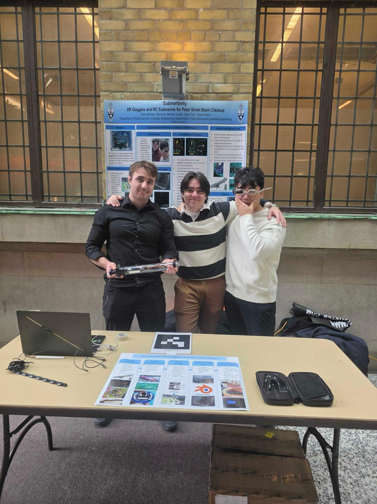
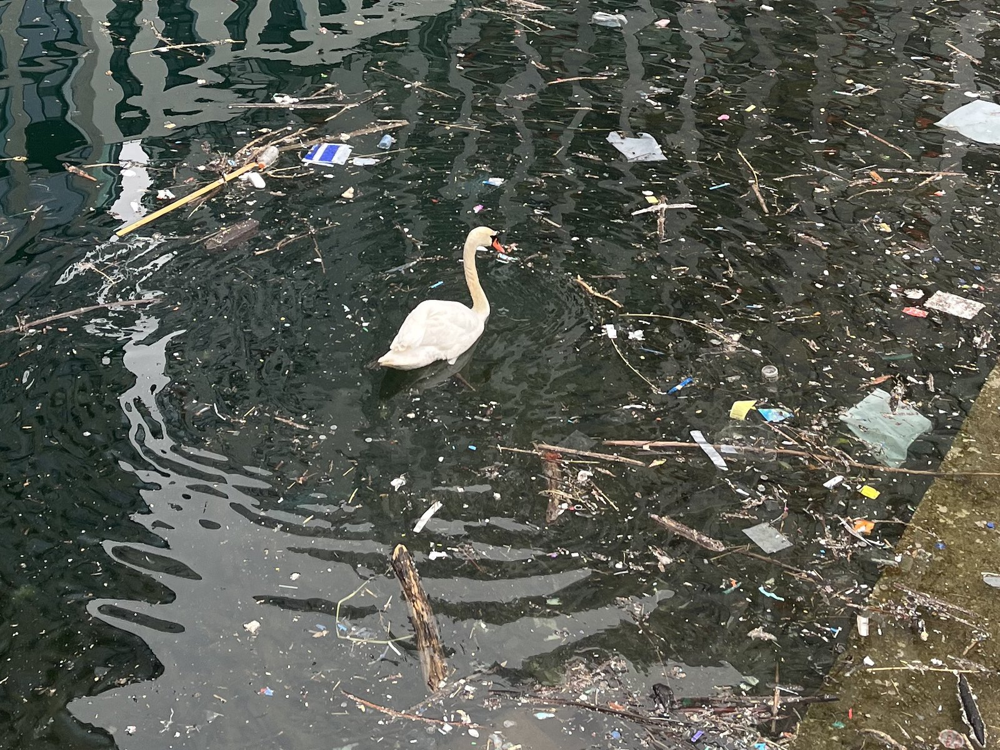
2.The vehicle
The submersible is based on the open-source ESP-DIVE platform: battery-powered and multi-motor, with a 3D-printed hull (printed on the Voron 2.4). A XIAO ESP32-S3 Sense camera board captures underwater imagery and transmits frames to the surface for inference.
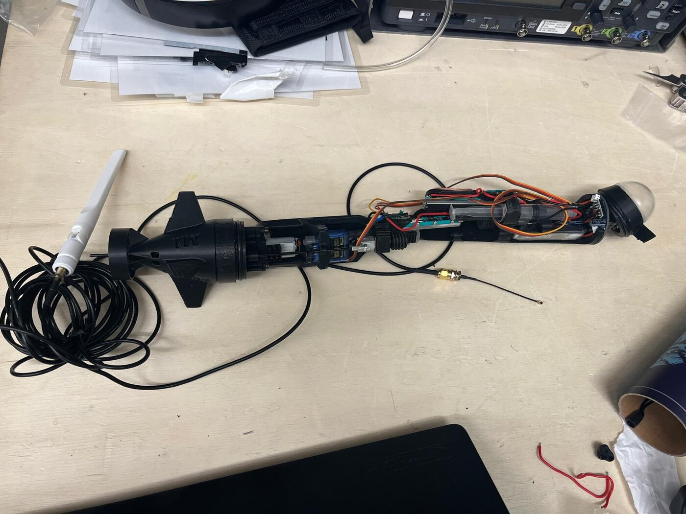
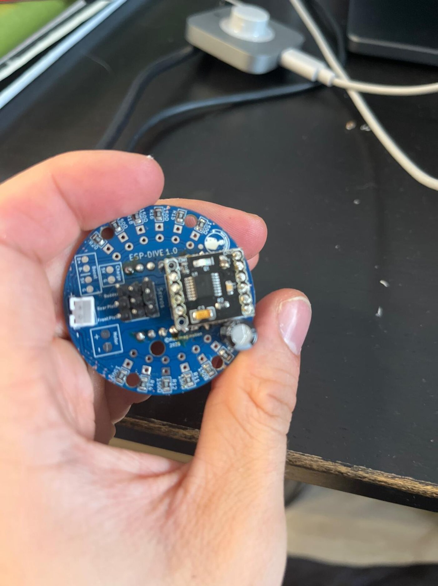
3.Detection
Debris detection uses a YOLOv8s model fine-tuned on a combined terrestrial and underwater dataset of 12,177 images (TACO, Trash-ICRA19, SeaClear). On the held-out validation set it reaches mAP50 0.883, precision 0.921, and recall 0.825 (mAP50-95 0.687), and it detects partially buried and translucent debris in the basin's turbid water.
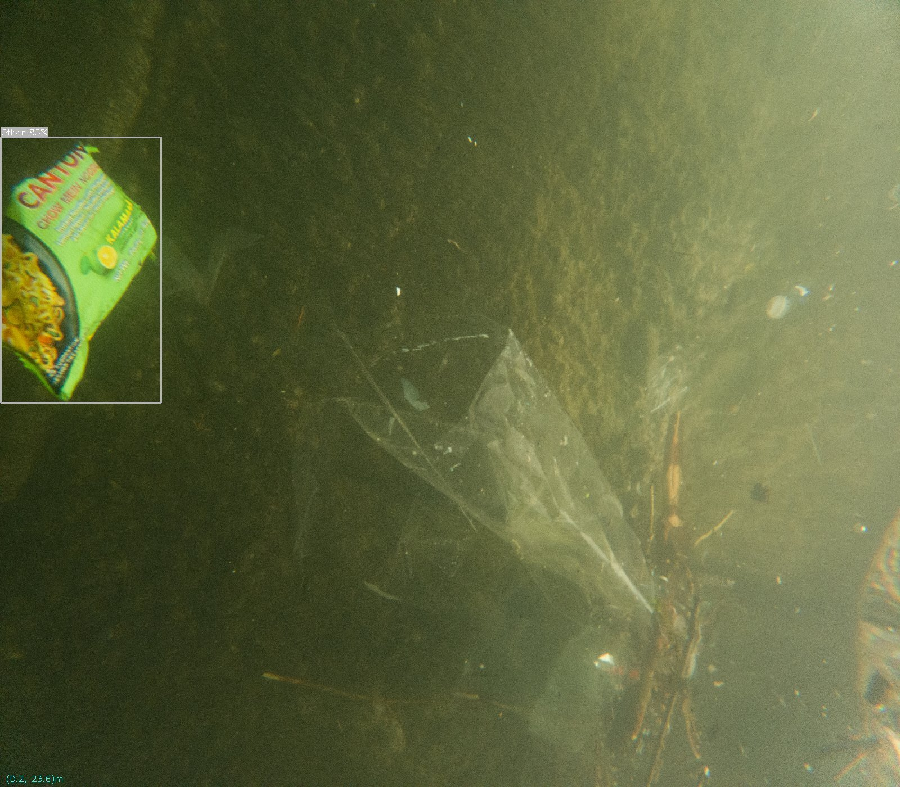
4.Basin-scale localization
To guide recovery, each detection needs a position in the basin. The basin was reconstructed with COLMAP structure-from-motion photogrammetry (frames extracted from GoPro video, dense reconstruction on an RTX 5070), and the model is registered to the world with ArUco markers. Each detection is projected into basin coordinates and accumulated on a survey map.
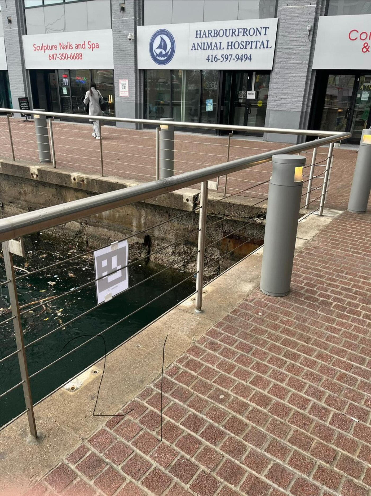
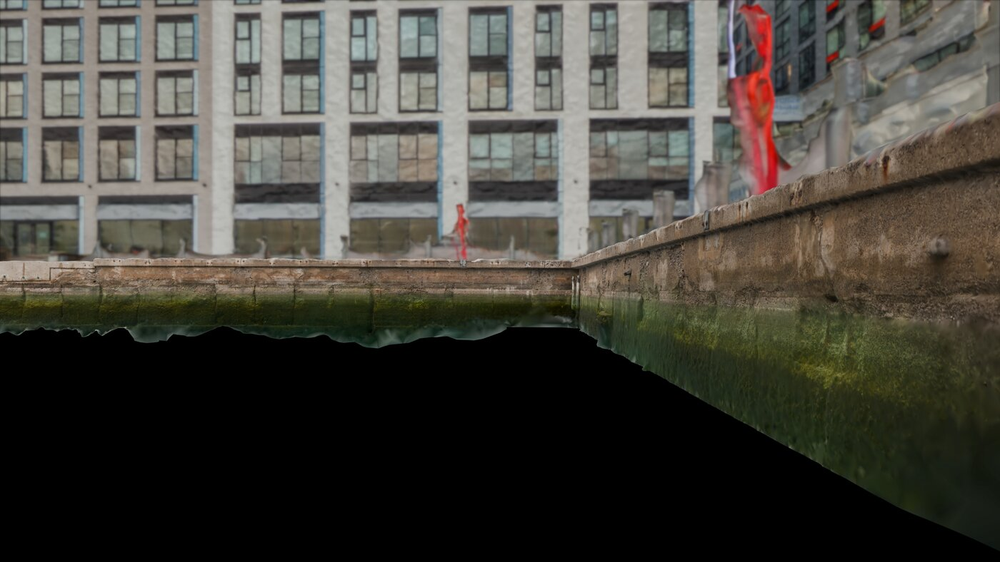
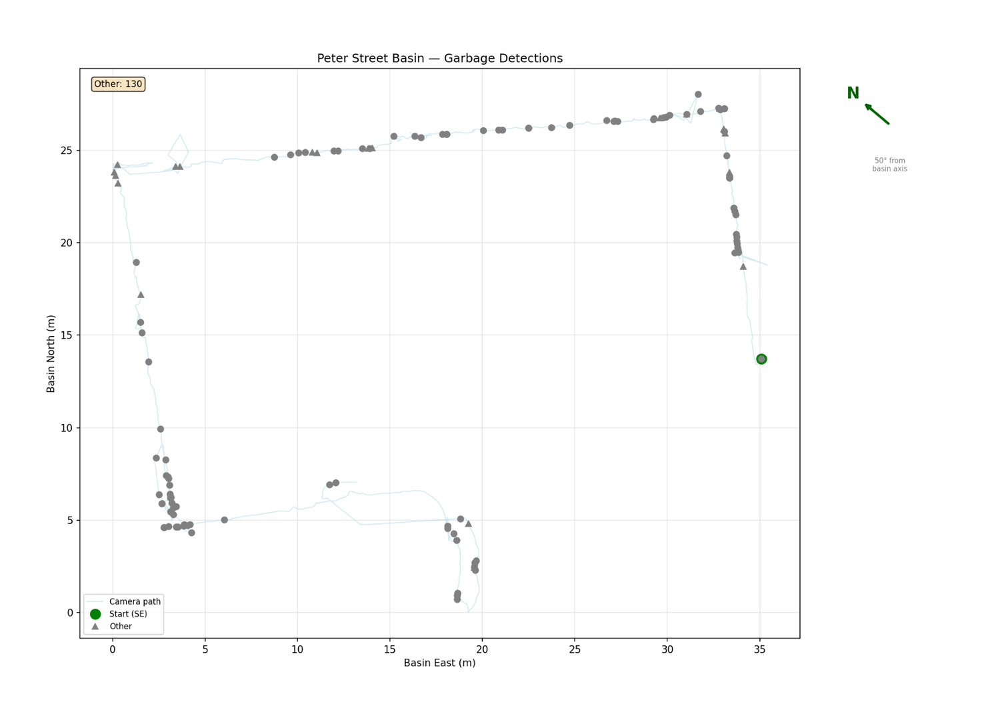
5.The XR layer
The results are displayed to the diver rather than on a laptop. Vuzix Smart Swim goggles show live detections, a reduced map of the basin with accumulated garbage locations, and a compass-style indicator pointing to the nearest target with its distance and class. The system detects and localizes the garbage and the diver recovers it, following the Humanistic Intelligence approach that runs through the lab's work.
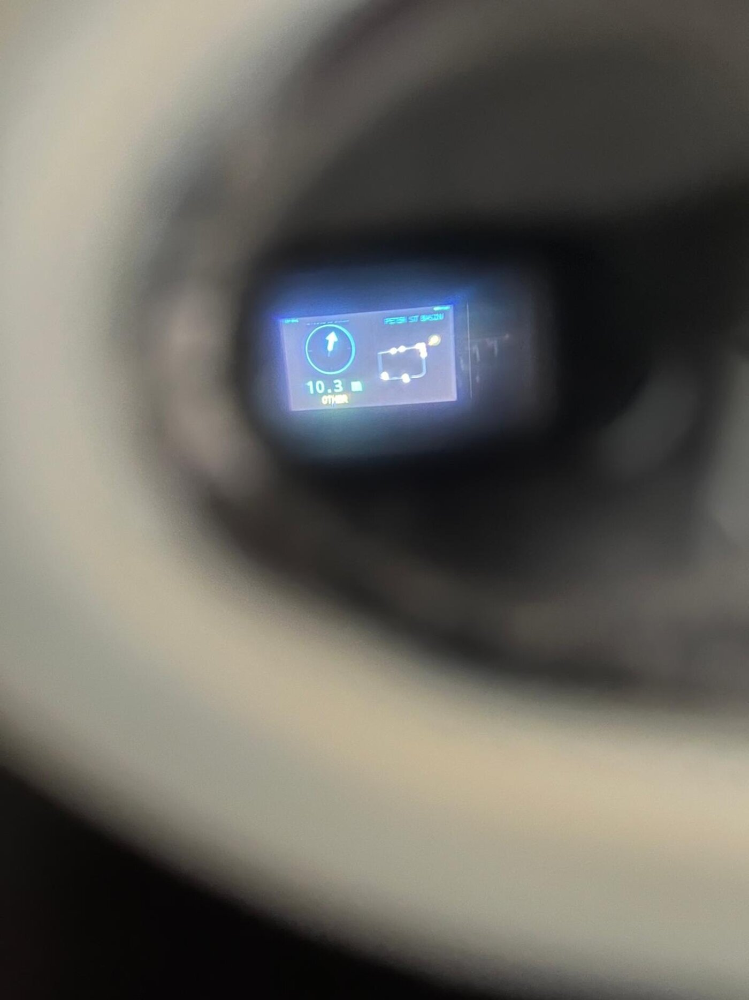
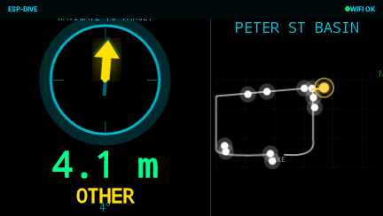
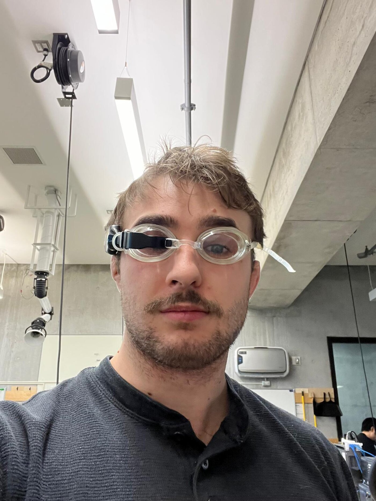
6.Publication
Chris McGale, Michel A. Herrera Viyella, Chan Park, Alexander Vicol, Steve Mann · University of Toronto.
IEEE International Conference on Mechatronics and Automation (ICMA). PDF ↗ (DOI link TODO once indexed.)